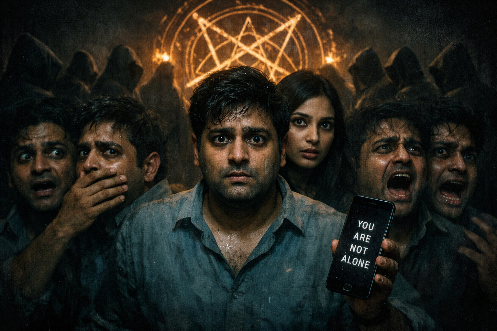

ఎపిసోడ్ 6 – నువ్వు ఒక్కడివి కాదు
నక్షత్ర ద్వారం – Episode 6
నక్షత్ర ద్వారం – Episode 6
నక్షత్ర ద్వారం (Nakshatra Dwaram) – Season 1
Episode 6 – నువ్వు ఒక్కడివి కాదు
SCENE 1 – కార్తిక్ గది, ఉదయం
(తెల్లవారుజామున వెలుతురు గదిలోకి వస్తోంది. కార్తిక్ ఒక కుర్చీలో నిశ్చలంగా కూర్చుని ఉన్నాడు. అతని కళ్లు ఎర్రబడి ఉన్నాయి, రాత్రంతా నిద్రలేదని స్పష్టంగా తెలుస్తోంది. అతని ముందు టేబుల్ మీద ఆదిత్య వెనక్కి ఇచ్చిన వాలెట్ మరియు రాహుల్ ఫోన్ ఉన్నాయి.)
కార్తిక్: (తక్కువ స్వరంతో, తనతో తానే) "వాడికి అన్నీ తెలుసు. నేను వాడి బెడ్ కింద ఉన్నానని వాడికి తెలుసు, నేను వాడి గతాన్ని తవ్వుతున్నానని వాడికి తెలుసు. కానీ వాడు నన్ను ఇప్పుడే ఎందుకు తాకడం లేదు? నాతో ఎందుకు ఆడుకుంటున్నాడు?. బహుశా చంపడం కంటే భయపెట్టడంలోనే వాడికి ఎక్కువ ఆనందం దొరుకుతుందేమో."
(టామ్మీ (కుక్క) డోర్ దగ్గర నిలబడి లోపలికి రావడానికి భయపడుతున్నట్టుగా వింతగా అరుస్తుంది.)
కార్తిక్: (నిట్టూర్పు విడుస్తూ) "రా టామ్మీ.. లోపలికి రా. ఇప్పుడు కూడా మన చుట్టూ ఎవరూ లేరు రా. కానీ ఎందుకు నీకు మాత్రమే ఆ నీడలు కనిపిస్తున్నాయి?."
SCENE 2 – పార్క్ – పగలు
(కార్తిక్ మరియు మేఘన పార్క్ లోని ఒక బెంచ్ మీద కూర్చుని ఉన్నారు. మేఘన కార్తిక్ వైఖరి చూసి కంగారు పడుతోంది.)
మేఘన: "కార్తిక్.. నువ్వు చాలా మారిపోయావు. నీ మాటల్లో నిశ్శబ్దం పెరిగింది, కళ్లలో నిద్ర మాయమైంది. అసలు ఏం జరుగుతోంది?."
కార్తిక్: (నేరుగా ఆమె కళ్లలోకి చూస్తూ) "మేఘన.. నిన్న రాత్రి నేను ఆదిత్య ఇంట్లో ఉన్నాను. ఎవరూ లేని సమయంలో దొంగలా వాడి గదిలోకి వెళ్లాను."
మేఘన: (షాక్ తో నోరు వెళ్లబెట్టి) "ఏంటి? ఎందుకు కార్తిక్? నీకు పిచ్చి పట్టిందా? వాడు మంచివాడైనా కాకపోయినా.. అది క్రైమ్ కదా!."
కార్తిక్: "రాహుల్ ఎందుకు చనిపోయాడో తెలుసుకోవడానికి ఆ రిస్క్ తీసుకోవాల్సి వచ్చింది మేఘన. నాకు భయం ఉంది.. కానీ ఇప్పుడు ఆ భయం కంటే నిజం చాలా పెద్దదిగా కనిపిస్తోంది. ఆదిత్య కేవలం ఒక సాదాసీదా మనిషి కాదు.. వాడు ఒక పెద్ద అబద్ధాన్ని బ్రతుకుతున్నాడు."
SCENE 3 – ఆఫీస్ – సాయంత్రం
(ఆఫీస్ హడావిడి తగ్గుతోంది. కార్తిక్ తన బ్యాగ్ సర్దుకుంటూ ఉంటే ఆదిత్య అతని వెనుక వచ్చి నిలబడతాడు. కార్తిక్ ఒక్కసారిగా ఉలిక్కిపడతాడు.)
ఆదిత్య: (వింతైన చిరునవ్వుతో) "నువ్వు బాగా అలసిపోయినట్టు ఉన్నావు కార్తిక్. నిన్న రాత్రి సరిగ్గా నిద్రపోయినట్టు లేవు. మరీ ఎక్కువగా పని చేయకు, ఆరోగ్యం పాడవుతుంది."
కార్తిక్: (కోపాన్ని అణచుకుంటూ) "అవును.. కొంచెం అలసటగా ఉంది."
ఆదిత్య: (మెల్లగా నడుస్తూ కార్తిక్ చెవి దగ్గరకు వచ్చి) "రాహుల్ లాంటి వాళ్లు కూడా ఇలాగే ఉండేవారు. కొన్ని సార్లు వాళ్లు అనవసరమైన విషయాల గురించి ఎక్కువగా ఆలోచించి.. తమని తాము ప్రమాదంలోకి నెట్టుకుంటారు."
కార్తిక్: (సూటిగా చూస్తూ) "రాహుల్ అలా కాదు ఆదిత్య. వాడు దేన్నైనా చూస్తే వదిలిపెట్టే రకం కాదు."
ఆదిత్య: (నవ్వుతూ) "అందరూ అలాగే అంటారు కార్తిక్. కానీ నిజం మనకు కావలసినట్టు ఉండదు కదా!."
SCENE 4 – రాహుల్ ఫ్లాట్ – రాత్రి
(కార్తిక్ చీకటిగా ఉన్న రాహుల్ ఫ్లాట్ లోకి వెళ్తాడు. ఫోన్ లోని లాక్ తీయడానికి ప్రయత్నిస్తాడు. చివరికి ఫోన్ ఆన్ అవుతుంది. అందులో ఒక వాయిస్ నోట్ కనిపిస్తుంది.)
VOICE NOTE (రాహుల్ వాయిస్): "కార్తిక్.. నేను ఇది నీ కోసమే రికార్డ్ చేస్తున్నాను. ఆదిత్య ఒక్కడు కాదు. వాడి వెనుక ఇంకా ఎవరో ఉన్నారు. నేడు ఒక పాత గోదాం దగ్గర వాళ్లని కలిసి ఉండగా చూశాను. వాళ్లు మనుషుల్లా లేరు కార్తిక్. నువ్వు చాలా జాగ్రత్తగా ఉండాలి.. వాళ్లు నీ వైపు కూడా రావచ్చు..."
(కార్తిక్ చేతులు వణుకుతాయి. ఆ వాయిస్ లో ఉన్న భయం అతన్ని కలిచివేస్తుంది.)
SCENE 5 – పాత గోదాం – రాత్రి
(రాహుల్ చెప్పిన లొకేషన్ కు కార్తిక్ వెళ్తాడు. దూరంగా ఒక పాడుబడ్డ గోదాం కనిపిస్తుంది. అతను పొదల చాటున దాక్కుని గమనిస్తాడు.)
(లోపల కొంతమంది నీడలు కనిపిస్తాయి. వాళ్లు నలుపు రంగు ముసుగులు వేసుకుని ఉన్నారు. నేల మీద ఒక వింతైన వృత్తాకార గుర్తు (Ritual Circle) ఉంది. గాలిలో ఒక వింతైన శబ్దం వస్తోంది.)
కార్తిక్: (లోలోపల) "ఇది మామూలు క్రైమ్ కాదు.. ఇది ఏదో రిచ్యువల్ లా ఉంది. అసలు వీళ్లకి ఆదిత్యకి ఉన్న సంబంధం ఏంటి?."
(అకస్మాత్తుగా కార్తిక్ ఫోన్ కు ఒక నోటిఫికేషన్ రావడంతో స్క్రీన్ వెలుగుతుంది. అతను వెంటనే ఫోన్ ఆఫ్ చేస్తాడు.)
SCENE 6 – మేఘన గది – రాత్రి
(కార్తిక్ పరిగెత్తుకుంటూ మేఘన ఇంటికి వెళ్లి తాను తీసిన ఒక ఫొటో చూపిస్తాడు.)
మేఘన: (ఫొటో చూసి షాక్ అవుతూ) "కార్తిక్.. ఆ నీడల్లో నిలబడి ఉన్నది ఆదిత్యనే కదా?."
కార్తిక్: "అవును మేఘన. వాడు అక్కడే ఉన్నాడు. అంటే రాహుల్ చనిపోయే ముందు చూసింది నిజమే. వీళ్లు ఏదో పెద్ద ప్లాన్ లో ఉన్నారు. మనం కూడా ప్రమాదంలో ఉన్నాం."
SCENE 7 – కార్తిక్ ఇల్లు – రాత్రి
(కార్తిక్ తన ఇంట్లో తలుపులన్నీ వేసి జాగ్రత్తగా ఉన్నాడు. టామ్మీ అకస్మాత్తుగా బెడ్ కిందకు దూరి భయంతో ముడుచుకుపోతుంది.)
(నిశ్శబ్దంలో ఉన్నట్టుండి డోర్ హ్యాండిల్ మెల్లగా కదలడం వినిపిస్తుంది. ఎవరో బయట నుంచి తలుపు తెరవడానికి ప్రయత్నిస్తున్నారు.)
కార్తిక్: (గట్టిగా) "ఎవరు? ఎవరు అక్కడ?."
(కార్తిక్ వెంటనే తలుపు తెరిచి చూస్తాడు. కానీ బయట కారిడార్ లో ఎవరూ లేరు. కేవలం గాలి వీస్తోంది.)
SCENE 8 – ఎపిసోడ్ ఎండ్
(కార్తిక్ భయంతో తలుపు వేసి కూర్చుని ఉండగా, అతని ఫోన్ కు ఒక అనోన్ నంబర్ నుండి మెసేజ్ వస్తుంది.)
MESSAGE: "YOU ARE NOT ALONE. (నువ్వు ఒక్కడివి కాదు.) "
(కార్తిక్ చుట్టూ చూస్తాడు. కిటికీ అద్దం మీద ఒక వింతైన చేతి గుర్తు కనిపిస్తుంది. స్క్రీన్ చీకటిగా మారుతుంది.)
-- CUT TO BLACK --